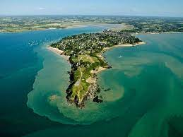

Cicruit 7 km
"Vél'Eau Breizh" vous propose un itinéraire pour découvrir la presqu'ile (St-Jacut de la Mer) avec un parcours sur l'eau. Et oui, vous avez bien lu. Faire du vélo sur l’eau. C’est désormais possible avec « Vél’eau Breizh ». Nul besoin d’être un bon cycliste ni un bon nageur. Notre équipe s’occupera d’installer un kit nautique entre deux flotteurs, ce qui vous permettra de pédaler le vélo sur l’eau avec une vitesse de 6 à 12 km/h. Les flotteurs sont parfaitement respectueux de l’environnement et sont capable de s’adapter à la plupart des VTT et peuvent supporter jusqu’à 120 kg (vélo compris). De quoi allier sport, nautisme, détente et nature.
Cicruit 21 km
Basé à St-Jacut de la Mer, “VÉL’EAU BREIZH” propose aux amateurs du vélo les différents parcours VTT, vélo de route et la cerise sur le gâteau, parcours vélo sur l’eau. Inspiré par le concept du slow tourisme l’origine de la création de ce projet provient de l’idée de fusionner les vacances et le sport tout en créant une ambiance décontractée et conviviale. Note : Ici, il s’agit de faire du vélo dans la terre aussi bien sur l’eau. Et oui, vous avez bien lu. Faire du vélo sur l’eau. C’est désormais possible avec « Vél’eau Breizh ». Nul besoin d’être un bon cycliste ni un bon nageur. Notre équipe s’occupera d’installer un kit nautique entre deux flotteurs, ce qui vous permettra de pédaler le vélo sur l’eau avec une vitesse de 6 à 12 km/h. Les flotteurs sont parfaitement respectueux de l’environnement et sont capable de s’adapter à la plupart des VTT et peuvent supporter jusqu’à 120 kg (vélo compris). De quoi allier sport, nautisme, détente et nature. Ainsi l’activité principale de « Vél’eau Breizh » concerne notamment la location du vélo et des kits nautiques.